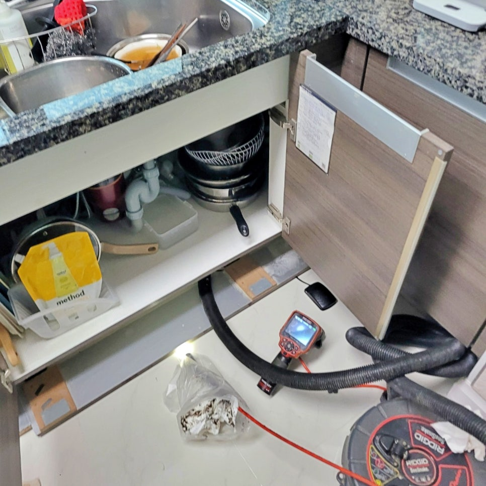
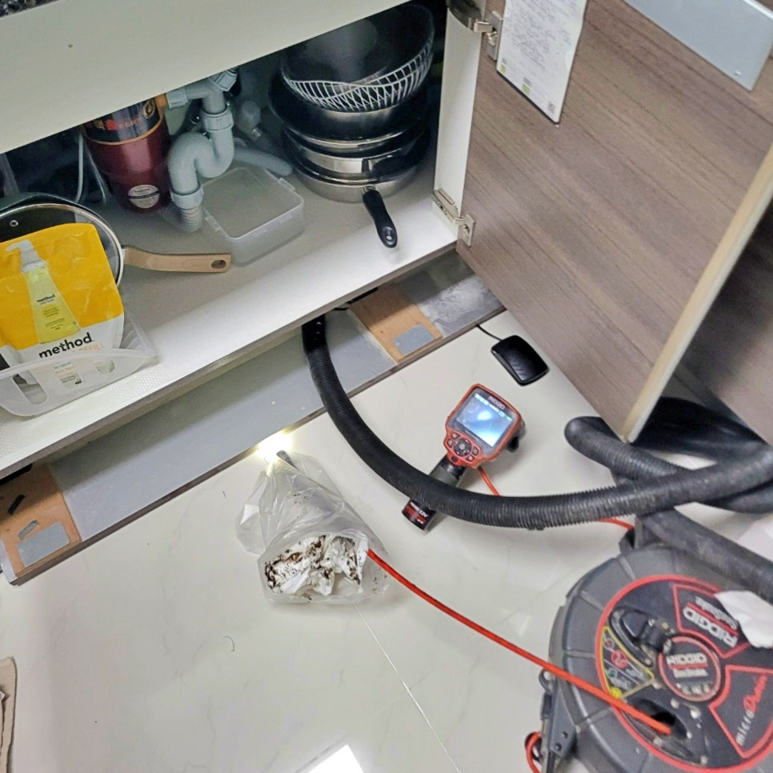
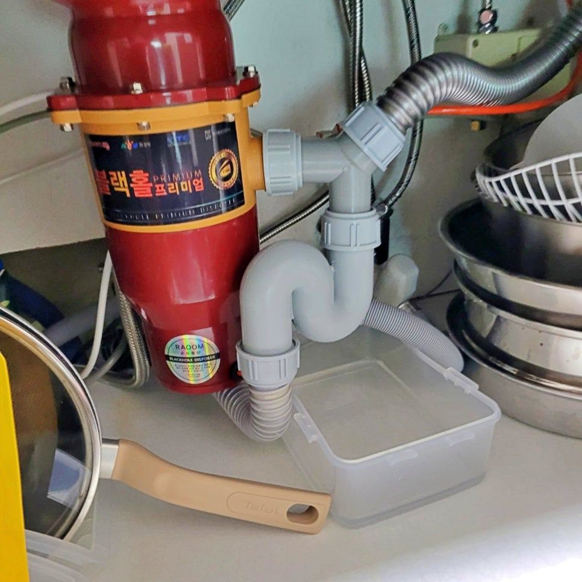
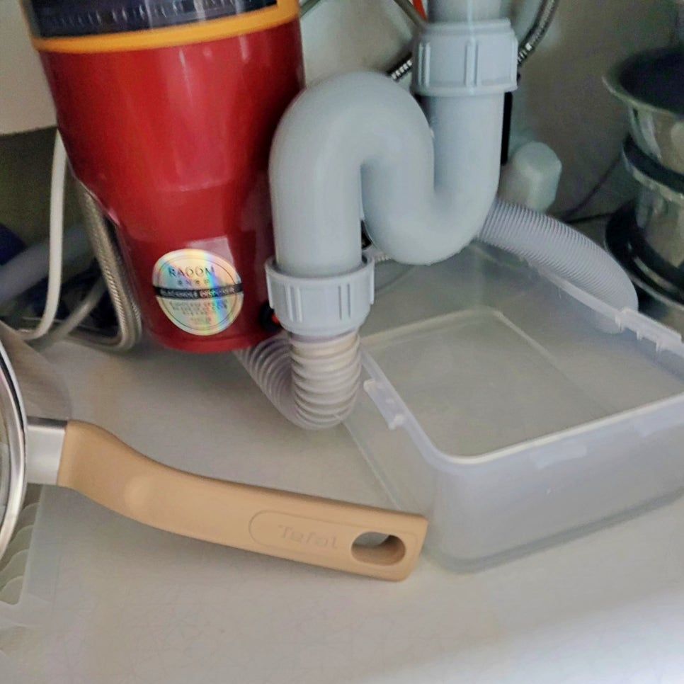
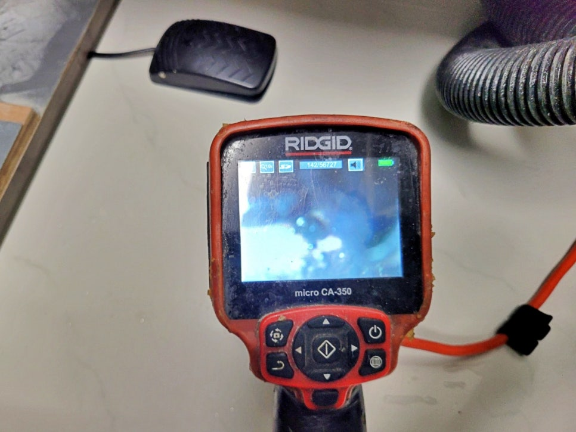
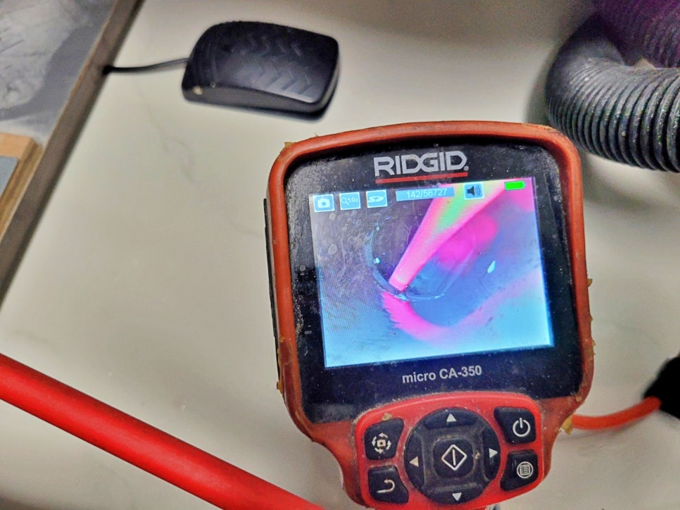

🏠 화성 남양읍 싱크대막힘, 주방 배관막힘 고압세척 해결
화성 남양 싱크대막힘 전문 시공 후기

📋 작업 개요
- 위치: 화성 남양, 남양, 화성
- 서비스 유형: 싱크대막힘, 하수구막힘, 배관막힘, 역류해결, 뚫는업체, 배관청소, 고압세척
- 작업 일시: 6시간 전
- 업체명: 하수구수사대 (010-5615-2118)
🔍 문제 상황
화성 남양읍 싱크대막힘,
주방 배관막힘을 고압세척으로 해결
안녕하세요.
화성 남양읍 싱크대막힘 현장을
다녀온 하수구수사대입니다.
이번 현장은 주방 싱크대 물이
시원하게 빠지지 않고, 물을 조금만
사용해도 배수 쪽 문제가 반복되는
상황이었는데요.
화성 남양읍 시공 현장 사진
겉으로는 싱크대 하부 배관이
크게 문제없어 보였지만, 이런 경우
눈에 보이는 트랩만 보고 판단하면
해결이 늦어질 수 있습니다.
그래서 현장에서는 싱크대 하부 배관을
확인한 뒤, 내시경 장비로 배관 안쪽
상태부터 살폈습니다.
화성 남양읍 싱크대막힘 원인
싱크대막힘은 음식물 몇 조각 때문에만
생기는 문제가 아니고요. 주방 배관
안쪽에 기름때와 찌꺼기가 계속
쌓이면서 물이 지나가는 공간이
좁아지는 경우가 많습니다.

🔎 원인 분석
💡 전문가 진단: 화성 남양읍 싱크대막힘,주방 배관막힘을 고압세척으로 해결
설거지할 때 흘러 들어가는 기름기,
양념, 세제 찌꺼기, 작은 음식물들이
시간이 지나며 배관 벽에 달라붙게 되죠.
싱크대 밑에 있는 배관 사진
처음에는 물이 조금 느리게 빠지는
정도라 대수롭지 않게 넘기기 쉬운데요.
하지만 어느 순간부터는 물을
틀자마자 배수 속도가 확 줄고,
심하면 싱크대 쪽으로 물이 다시
올라오는 증상까지 생길 수 있습니다.
이번 화성 남양읍 현장도 비슷했습니다.
싱크대 하부 배관을 열어 확인하고,
내시경 카메라를 넣어 보니 배관 안쪽에
막힘 구간이 분명하게 보였습니다.
눈으로 확인하지 않고 무작정 뚫기만 하면
겉에 가까운 부분만 잠깐 열리고, 며칠 뒤
같은 증상이 다시 생길 가능성이 큽니다.
내시경 카메라로 배관 상태 확인 중
그래서 하수구수사대는 먼저 배관 상태를
보고 어디서 막혔는지, 어느 정도 작업이
필요한지 확인한 뒤 작업 방향을 잡았습니다.
이번 현장 핵심은 이렇습니다.
· 현장 위치: 화성 남양읍 주방
· 증상: 싱크대 배수 불량, 배관막힘

🔧 작업 과정
· 확인 장비: 배관 내시경 카메라
· 작업 방식: 고압세척 배관 청소
· 결과: 막힘 구간 세척 후 배수 확인
고압세척으로 배관막힘 해결
싱크대 배관막힘은 스프링 장비만으로
해결되는 현장도 있는데요. 하지만 배관
안쪽에 기름때가 넓게 붙어 있으면
한 지점만 뚫는 방식으로는 부족합니다.
물길만 잠깐 생기고, 배관 벽에 붙은
찌꺼기는 그대로 남을 가능성이 있기
때문입니다.
고압세척으로 배관을 뚫는 모습
이번 현장은 내시경 확인 후
고압세척 장비를 사용했습니다.
고압세척은 물의 압력으로 배관 내부에 붙은
기름때와 찌꺼기를 밀어내는 작업인데요.
작업 중에는 내시경 화면을 보면서
막힘 구간이 어떻게 제거되는지 확인했고,
세척 후에는 물을 흘려보내 배수 상태를
반복해서 점검했습니다.
보통 이런 싱크대 배관막힘 현장은
현장 구조가 단순하면 1시간 안팎으로
끝나는 경우도 있지만 막힘이 심하면
1시간 30분에서 2시간 이상 걸릴 때도
있습니다.
비용도 현장 상황에 따라 달라지기에
현장의 증상과 배관 구조를 확인한 뒤
필요한 작업 범위를 먼저 설명드리고
시공을 진행합니다.
이번 시공 후기를 마무리하며
고압세척 후 배관 안이 깨끗해진 사진
이번 화성 남양읍 싱크대막힘 현장은
내시경 확인과 고압세척이 필요한 상태였고,
작업 후 배수 테스트까지 진행해 물이
막힘 없이 내려가는 것을 확인했는데요.
하수구수사대는 현장에서 증상을
확인하고, 배관 내부 상태를 살핀 뒤
필요한 장비로 막힌 구간을 처리합니다.


✅ 작업 완료
오늘 소개해 드린 사례처럼
주방 싱크대막힘이나 배수 불량이
반복된다면 방치하지 말고 초기에
점검받아 문제를 빠르게 해결해야
합니다.
만약 싱크대 물이 예전처럼 시원하게
내려가지 않는다면 하수구수사대가
원인을 확인하고 필요한 작업으로
해결해드리겠습니다.
#화성남양읍싱크대막힘 #화성남양읍배관막힘 #화성남양읍하수구막힘 #화성남양읍싱크대역류 #화성남양읍고압세척 #남양읍주방배관막힘 #화성남양읍고압세척전문 #하수구수사대




⚠️ 주방 싱크대 배관 막힘 예방 수칙
- ✅ 기름기가 묻은 식기나 프라이팬은 설거지 전 키친타올로 반드시 기름때를 닦아내세요.
- ✅ 주기적으로 싱크대 개수대에 뜨거운 물을 가득 받아 한 번에 내려 배관 내부 기름을 씻어내세요.
- ✅ 배수구 거름망을 미세한 필터로 사용하시고 음식물 찌꺼기가 틈으로 새어 들지 않게 관리하세요.
- ✅ 베이킹소다와 식초를 뜨거운 물과 함께 일주일에 한 번씩 부어주면 배관 살균과 막힘 예방에 좋습니다.
💡 핵심 정리
- 확실한 장비 작업(내시경 점검 및 샤프트 스케일링)으로 원인을 뿌리 뽑습니다.
- 작업 후 1년 이내에 동일한 부위 재발 시 100% 무상 A/S 서비스를 보장합니다.
- 서울 · 경기 · 인천 전 지역에 24시간 언제든 긴급 출동할 수 있도록 항시 대기 중입니다.
❓ 자주 묻는 질문 (FAQ)
🚨 화성 남양 싱크대막힘 문제로 고민이신가요?
정확한 원인 진단과 확실한 시공으로 재발 없는 해결을 약속드립니다.
24시간 긴급 출동 | 서울 · 경기 · 인천 전지역 | 1년 내 재발 시 무상 A/S